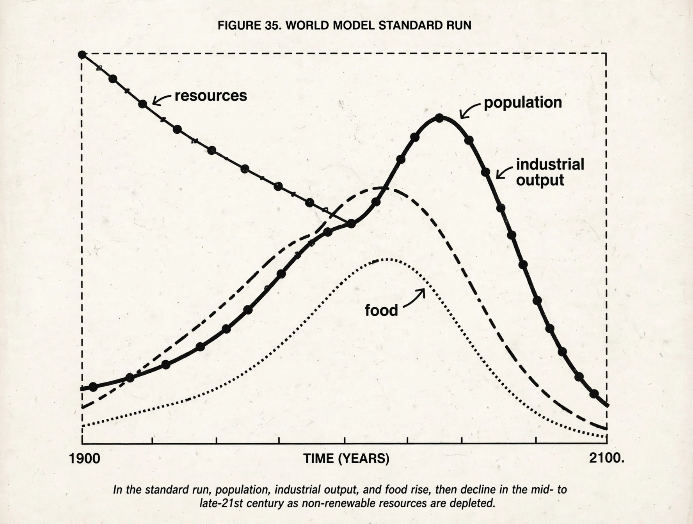

The Limits to Growth

The Limits to Growth is a 1972 report to the Club of Rome by Donella Meadows, Dennis Meadows, Jørgen Randers and William Behrens III, which used an early system-dynamics computer model (World3) to explore how exponential growth in population, industry, food production, resource use and pollution would interact over the 21st century.
Its 'standard run' showed overshoot and decline of industrial output and population in the mid-21st century unless policies changed — a conclusion that made it one of the best-selling and most contested environmental books ever published.
Model and message
World3 tracked stocks and flows and their feedbacks: more industry needs more resources and generates more pollution; more people need more food and services. Because pollution and resource depletion bite with delays, the model world typically overshot its carrying capacity before correcting — not by running out of everything at once, but through the rising costs of coping. The authors stressed the runs were scenarios, not predictions, and showed stabilised paths in which deliberate limits produced a sustainable equilibrium.
The book appeared months before the {L('1973_oil_crisis')} made resource limits vivid, and was attacked by many economists for crude aggregation and for underestimating technology and markets, and defended as directionally right about the costs of delay.
Afterlife
Updates followed: Beyond the Limits (1992) concluded humanity had already overshot some limits; a 30-year update (2004) found the scenarios holding. Later comparisons have argued that observed data track the standard run uncomfortably closely, though such exercises remain debated. The report's deeper legacy is in Earth-system thinking — the direct ancestor of planetary-boundaries research and of scenario modelling used by the {L('IPCC','IPCC')} today.
See also: Sustainable development · Climate change · Biosphere · Population growth